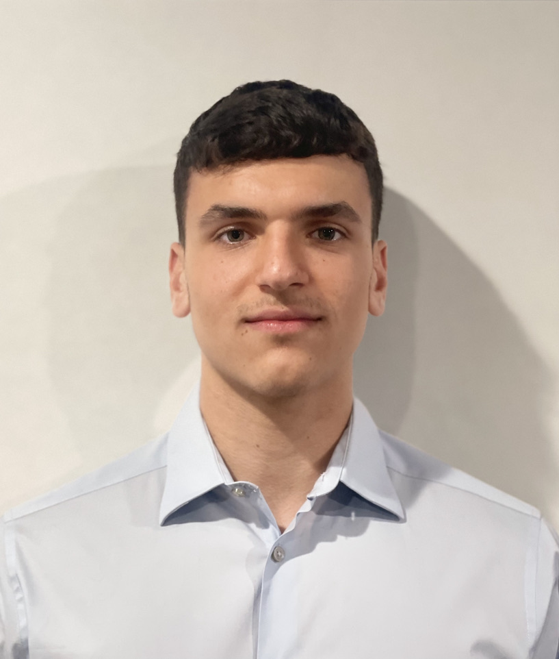

Anthony Rizzuto

**WEBSITE IS STILL IN DEVELOPMENT PROCESS** LAST UPDATED: 2-15-23 11:35 PM
Summary
In third year of Software Engineering bachelors with a Computer Science minor. Actively preparing for AWS Certified Cloud Practitioner Exam. Seeking a 2024 summer internship in a highly technical, specialized environment where I can showcase my skills, learn from my peers, and grow in the software industry. Strong soft skills complement technical expertise. Available immediately for internship opportunities.
Education
Stevens Institute of Technology | Hoboken, NJ (Expected 2025)
Bachelor of Engineering, Software Engineering | Computer Science Minor
Current GPA: 3.6/4.0
Relevant Coursework: Object-Oriented Software Development, Software Design & Development, Data Structures and Algorithms,
Model Based Software Engineering, Introduction to Computer Science, Individual Software Engineering, Agile Methods
Activities: Stevens Software Engineering Club
Skills & Certifications
Software: Arduino, MS Office: Word, Excel, PowerPoint, Visio, 3D Printing
Programming: C++ (Basic), HTML (Intermediate), CSS (Intermediate), JavaScript (Basic), Python (Intermediate), Java
(Intermediate), LaTeX (Basic), MATLAB (Intermediate)
Projects
Stevens Institute of Technology | Hoboken, NJ
Amplifier + Crossover Filter Network
March 2023 – May 2023
- Utilized MATLAB and Simulink to model an amplifier and filter circuit that amplifies/filters frequencies in an audio signal.
- Used physical resisters, capacitors, op-amps, and other electrical equipment to physically model and integrate the Simscape
circuit with a midrange and woofer speaker.
PyGame: Asteroid Destroyer Game
October 2022 – December 2022
- Created a game, Galaga clone, in Python only using the PyGame library.
- Designed the game's visuals with PNG files and implemented PyGame functions for proper gameplay.
Autonomous Driving Robot
March 2022 – May 2022
- Developed and designed an autonomous driving robot that navigated an obstacle course in a given time by programming a
WeMos board and ultrasonic sensors through Arduino.
- Programmed the robot to receive and transfer location information through a MQTT broker in Arduino.
- Worked with two team members to successfully calibrate the robot, along with designing a technical report and presentation.
Office Environment Monitoring System
November 2021 – December 2021
- Designed, tested, and operated an office environment monitoring system to be placed on a desk that uses a DHT11 sensor
along with a WeMos board to monitor an environment remotely with a DHT11 sensor.
- Programmed DHT11 sensor with Arduino to collect the temperature, humidity, and light intensity of the environment and
worked the IoT to publish the data.
Personal Projects
August 2023 – September 2023
- Created a responsive user-friendly and visually appealing static website from scratch using HTML and CSS.
Web Design Project: NYSellz LLC
May 2022 – August 2022
- Designed an efficient WordPress website and added styling with CSS to improve brand image for a sneaker business.
- Integrated the WooCommerce plugin to ensure easy and secure payments for customers.
Work Experience
A Salute Italian Restaurant & Bar | Matawan, NJ
May 2022 – Present
Server
- Serving customers and providing excellent service to enhance their experience and resolving customer issues.
Event Coordinator
- Coordinate many different events, such as anniversaries, birthdays, corporate meetings, by ensuring every event is properly
staffed and planned accordingly to uphold restaurant reputation.
- Collaborate with cross-functional teams, such as chefs, servers, managers, bartenders, and decorators.
- Responsible for restaurant budgeting and processing customer payments to ensure profit.
- Achieved, to date, a net gain of over $500,000 for the restaurant.
The Inlet Café & Tiki Bar | Atlantic Highlands, NJ
May 2023 – September 2023
Server
- Provided superb customer service while simultaneously receiving food and drink orders to improve brand loyalty.